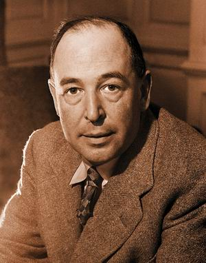
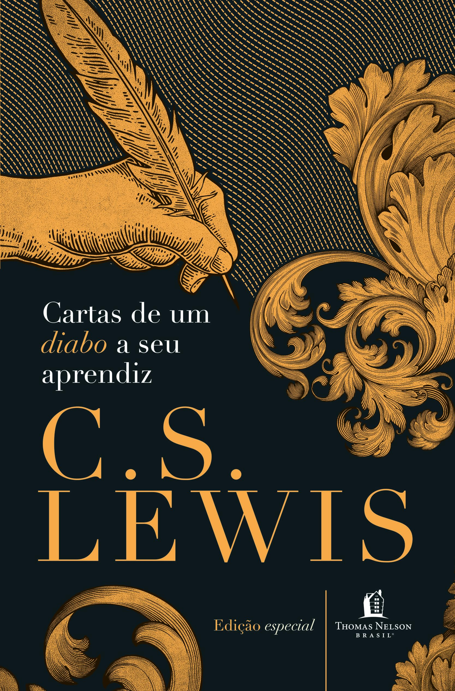
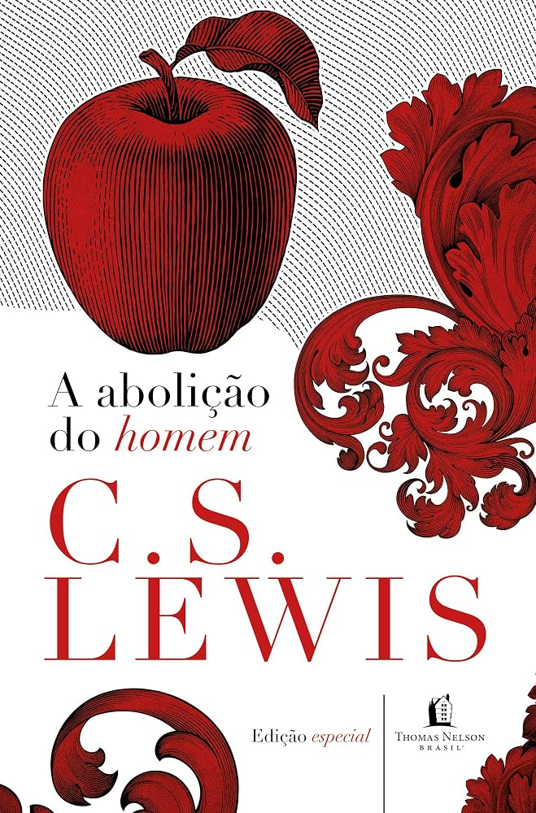
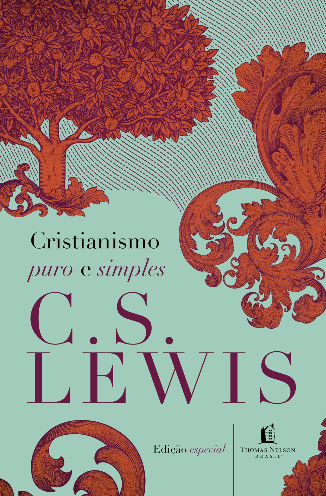

Clive Staple Lewis, também conhecido como C. S. Lewis, foi um professor universitário, escritor, romancista, poeta, crítico literário, ensaísta e teólogo anglicano irlandês.
Clive Staples Lewis, comumente referido como C. S. Lewis, nasceu em 1898 em Belfast, Irlanda do Norte. Durante sua carreira acadêmica, foi professor e membro do Magdalen College, tanto da Universidade de Oxford como da Universidade de Cambridge. Ele é conhecido por seus trabalhos envolvendo tanto a apologia cristã.
Em vida, foi grande amigo do também professor universitário e escritor britânico J. R. R. Tolkien (1892-1973) autor de O Senhor dos Anéis. Juntos, os dois serviram como membros do corpo docente da Faculdade de Língua Inglesa da Universidade de Oxford e lideraram o grupo informal de discussão e colaboração literária The Inklings. Apesar de ter sido criado ao longo da infância dentro das tradições da Igreja da Irlanda, se tornou um ateu convicto na altura de sua adolescência, seguindo essa linha de convicção pessoal até o início de sua idade adulta, quando, por intermédio de Tolkien, voltou a professar a fé cristã, tornando-se um árduo apologeta do cristianismo até o fim de sua vida.

A história toma a forma de uma série de cartas de um demônio sênior, Maldanado, a seu sobrinho, um demônio "tentador" aprendiz chamado Vermelindo, de modo a aconselhá-lo sobre os métodos de garantir a condenação de um homem britânico, conhecido apenas como "Paciente".
"Cuide da religiosidade dele. Adoro gente religiosa. Tenho uma linda gaiola cheia deles balançando aqui perto." — Maldanado

Nas poucas, porém densas páginas desta obra, C. S. Lewis defende a moralidade absoluta e os valores universais, como o altruísmo, a caridade e o amor, além de expor as consequências da falta desses princípios na sociedade.
"Produzimos homens sem peito e esperamos deles virtude e iniciativa. Caçoamos da honra e nos chocamos ao encontrar traidores entre nós."

Em um dos períodos mais sombrios da humanidade, a Segunda Guerra Mundial, C.S. Lewis foi convidado pela BBC a fazer uma série de palestras pelo rádio com o intuito de explicar a fé cristã de forma simples e clara. Mais tarde, ajustado pelo próprio Lewis, esse material daria origem a Cristianismo puro e simples, um grande clássico da literatura.
"Abra a mão do seu eu e vai encontrá-lo de verdade; põe a sua vida a perder e acabará por salvá-la."
Em Os quatro amores, um de seus livros mais influentes, Lewis contempla a essência do amor e avalia como cada tipo se ajusta aos demais. Para o C.S. Lewis, o amor pode ser comunicado de quatro maneiras: Afeição, a forma mais básica de amar; Amizade, considerada a mais rara; Eros, o amor apaixonado; e Caridade, o maior e menos egoísta deles.
"Cada vez que você faz uma opção está transformando sua essência em alguma coisa um pouco diferente do que era antes."